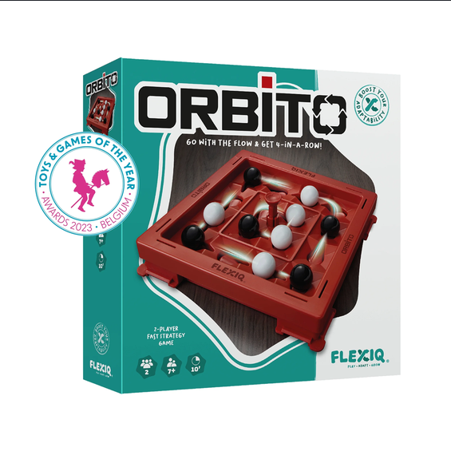
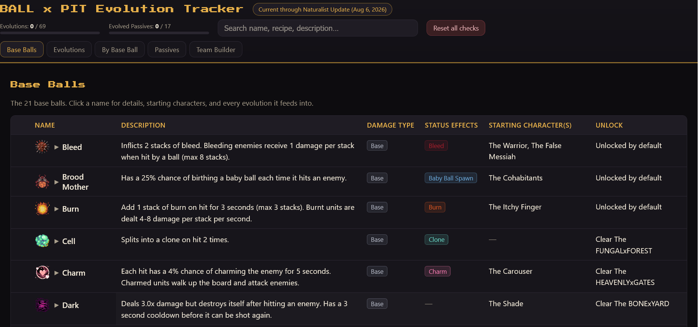
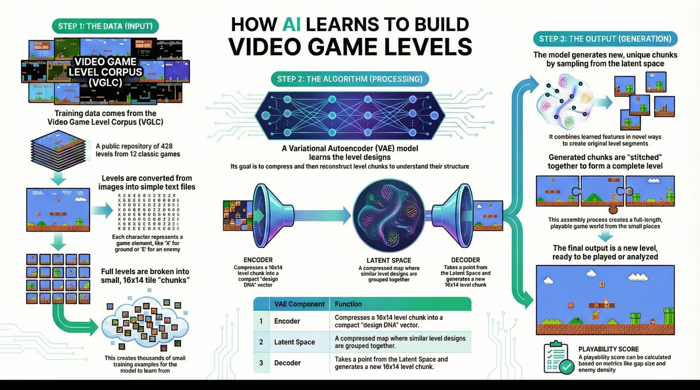

01 / GamesCrafters · UC Berkeley
GamesmanUni Redesign
Redesigning a research platform of 107 games and puzzles so new players find what they want without getting lost.
HCI / Game design / Engineering
HCI and game designer at UC Berkeley (CS + Data Science). I focus on player experience, onboarding, and learnability: interfaces that teach by doing, not walls of text.
Currently: Website Lead at GamesCrafters, applying to HCI master's programs for Fall 2027.
Selected work / 01–04
Four projects about helping people find their way through games and tools.
Redesigning a research platform of 107 games and puzzles so new players find what they want without getting lost.

Turning a rotating physical board game into a click interface that still feels real, on top of a solver covering 20M+ positions.

A player tool the community built on: Pit Crew uses my tracker as its foundation.

A generative model for game levels, with a validation pipeline that cut unplayable levels from 30% to 5%.
What I focus on
Making the first step clear and letting an interface teach through action.
Translating game rules and complex choices into understandable interactions.
Evaluating generated content by whether people can actually use it.